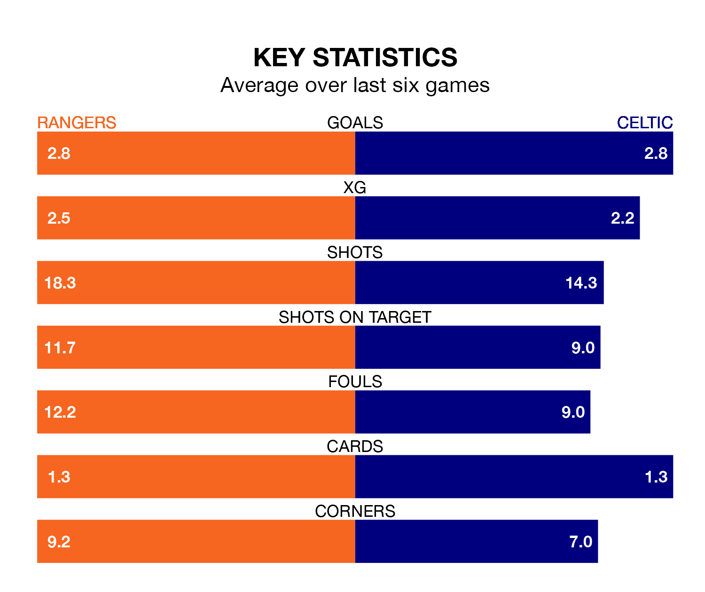

The Premiership's top two sides face each other at the Ibrox Stadium in Sunday lunchtime's kick-off, when second-placed Rangers host Celtic.
Rangers have picked up 24 wins and one draw from 30 games so far this season, and sit one point below the visitors going into the 12pm match.
The Bhoys, meanwhile, have won 23 and drawn five of 31, picking up 74 points.
With 74 goals in 31 games so far this season, Celtic are the league's highest scorers with 2.4 goals per game. And they are conceding fewer than average, letting in 23 goals at a rate of 0.7 per game.
Rangers are also above average scorers, with 2.2 goals per game, compared to a league average of 1.3. They have conceded 0.6 goals per game.
With Jack Butland between the sticks, the home team can rely on one of the league's safest pair of hands. He has kept 17 clean sheets in his 30 appearances this season, and no 'keeper has prevented the opposition scoring more often in the Premiership.
In the Bhoys's net, Joe Hart has 12 clean sheets in 30 games. He has conceded a goal every 139 minutes, 10% more often than the 159 minutes between goals for Butland.
In the last 10 years, Rangers and Celtic have played each other on 35 occasions. Rangers won 10 of them, Celtic 20, and they drew five times.
On average, Rangers scored 1.0 goals and the Bhoys 1.6 in those matches.
Their last meeting was on December 30, when Celtic won 2-1 at home.
Rangers are in fantastic form in the Premiership, with five wins and one loss from their last six games.
With four wins and a draw over that period, the visitors' form is slightly worse – they have taken 13 points from 18, compared to Rangers's 15.
Rangers's last match was on March 30, a 3-1 win against Hibernian, with Cyriel Dessers, James Tavernier and Rabbi Matondo getting the goals for Rangers.
Celtic beat Livingston 3-0 last time out, on March 31, with Jamie Brandon (own goal), Matthew O'Riley and Paulo Bernardo on the scoresheet.
Sunday's match will be refereed by John Beaton, who has taken charge of 16 Premiership games so far this season, issuing one red card and booking 63 players. He has awarded 12 penalties.
The last Rangers game Beaton refereed was a 3-0 home win against Livingston on February 3. His last Celtic match was their 1-1 draw at home against Kilmarnock on February 17.
Updated: 16:41 (UTC), 04/04/24